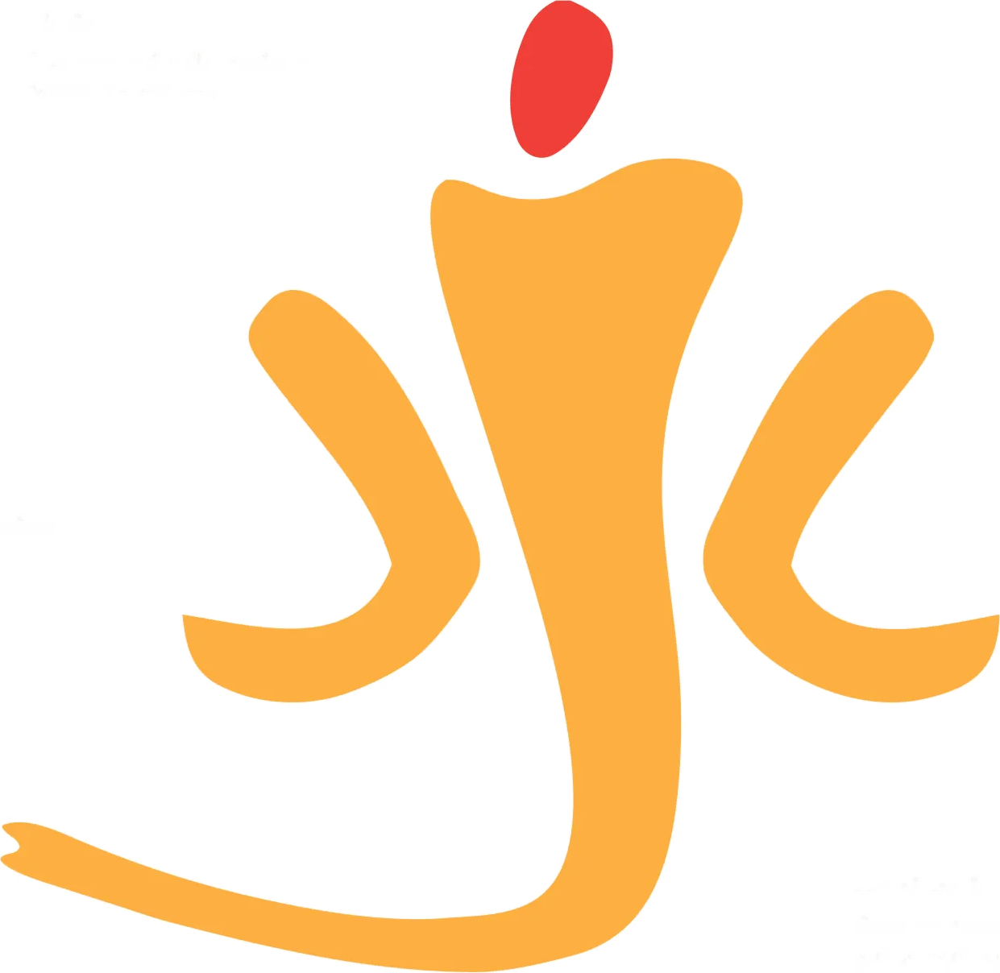
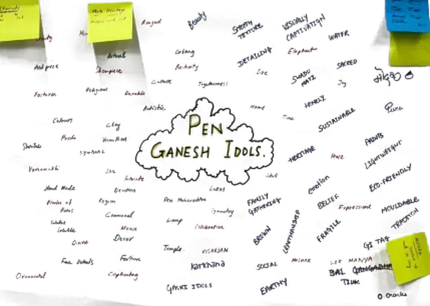
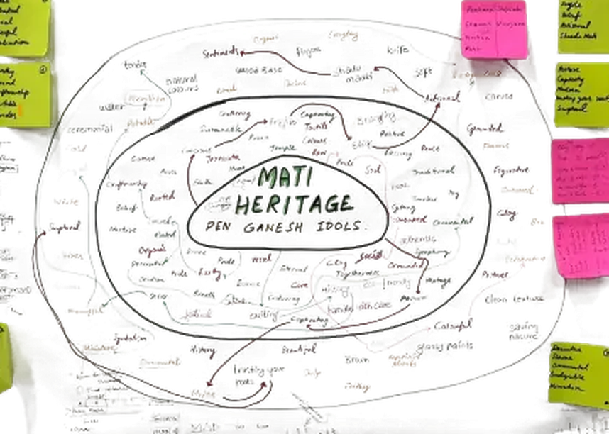
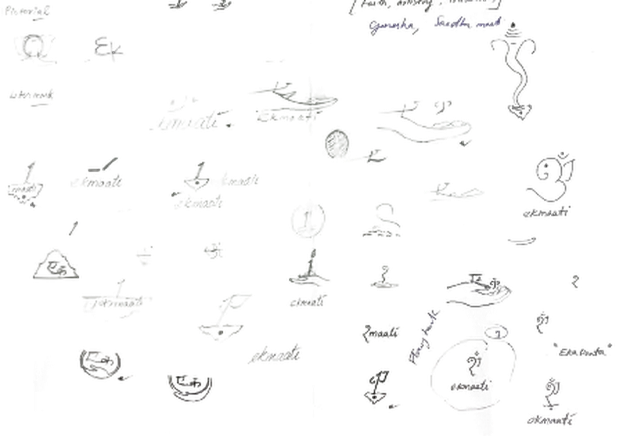
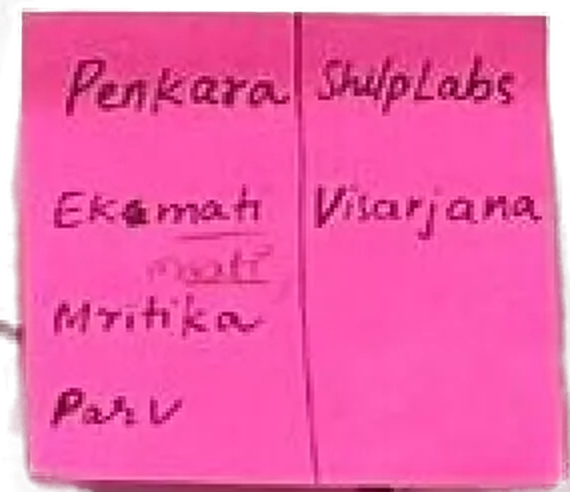

Ekmaati · Branding · Packaging · 2026
एक माती
A name, a mark and a temple-shaped box for the clay Ganesh idols of Pen. The idol goes back to the river. The box stays, because the box is the temple.
CraftPen, Maharashtra · GI 2024
MadeName, mark, type, colour, box
RoleSole designer, NID Semester 2

05 · Research
From chart paper to a temple-shaped box. The line opens up where I explored and narrows where I decided, and the handwriting is mine, straight off the paper at each step.
Research
Define
Design
Make
Explore
Decide

Every word Pen idols carry, on chart paper.

Narrowed to “maati heritage”.
Urban 25 to 40. Commodity to keepsake.

Trunks, om, temples, the number one.

Penkara, Clay & Shrine, Ekmaati.
Three boxes in one, curtains, temple.
The packaging becomes the altar.
18 · Experience map
From the stall to the river and back to a desk: what the buyer does, thinks and feels at each step of the festival errand, and what the design does in reply.
01
Picks one idol from a row
Which one is from Pen?
02
Walks home in rain
Will it get wet?
03
Tears along the perforation
Just tear along the dots?
04
Folds the arched panel down
Oh.
05
Sets it up with a diya
It fits my desk.
06
Dissolves the idol, keeps the temple
What do I do with the box?
Anticipated, not researched: a designed experience to test with the printed box.